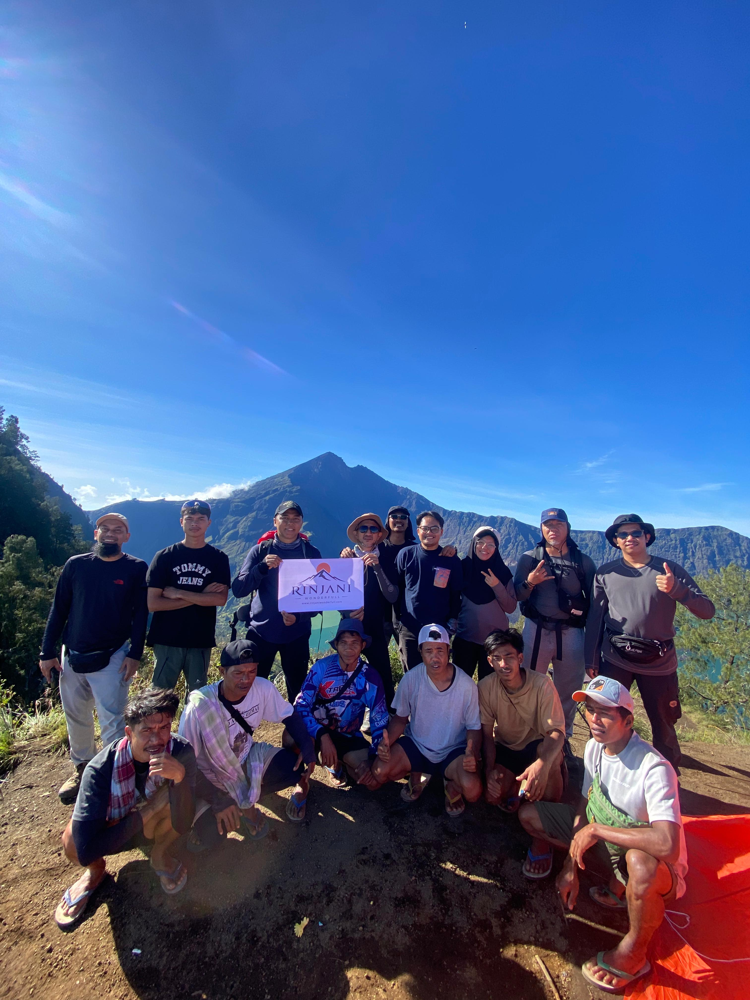
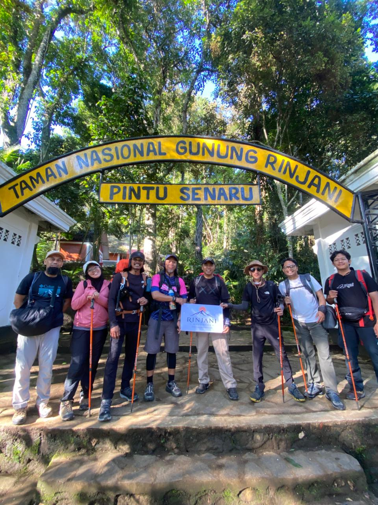
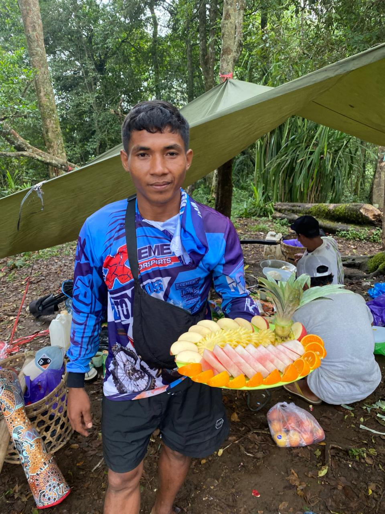

Rencana perjalanan detail dari hari ke hari untuk memastikan pengalaman pendakian Anda terstruktur, aman, dan berkesan.

Paket kilat yang dirancang khusus bagi pendaki berpengalaman atau mereka yang memiliki waktu libur terbatas namun ingin merasakan sensasi berdiri di puncak Gunung Rinjani (3.726 mdpl).
Setelah sarapan, registrasi di Rinjani Information Center (RIC). Pendakian dimulai melintasi padang savana terbuka menuju Pos 1 (Pemantauan), Pos 2 (Tengengean), hingga Pos 3 (Pada Balong) untuk makan siang. Perjalanan dilanjutkan dengan trek menanjak ekstrem (Bukit Penyesalan) menuju Pelawangan Sembalun (2.639 mdpl) untuk mendirikan tenda, makan malam, dan istirahat.
Bangun pukul 02:00 WITA. Makan ringan dan minuman hangat sebelum "Summit Attack" menuju Puncak Rinjani (3.726 mdpl). Tiba di puncak saat matahari terbit untuk menikmati pemandangan spektakuler. Turun kembali ke Pelawangan untuk sarapan besar, kemudian bersiap turun kembali ke Desa Sembalun melalui rute savana yang sama. Perjalanan berakhir sore hari.

Paket paling populer (Best Seller) untuk menikmati keseluruhan ikon Gunung Rinjani mulai dari padang savana, puncak gunung, keindahan Danau Segara Anak, hingga berendam di sumber air panas alami.
Perjalanan dari Desa Sembalun melewati rute savana hijau (Pos 1, 2, dan 3). Tantangan utama hari ini adalah melewati "Bukit Penyesalan" (7 bukit terjal) menuju camp Pelawangan Sembalun. Nikmati pemandangan matahari terbenam dengan siluet Gunung Agung Bali dari kejauhan.
Summit attack pukul 02:00 WITA. Setelah menikmati sunrise di puncak 3.726 mdpl, kembali ke camp untuk sarapan. Kemudian perjalanan menurun curam menuju Danau Segara Anak. Tiba di pinggir danau siang hari, santai, memancing, dan merelaksasi otot di Pemandian Air Panas Alami. Tenda didirikan di tepi danau.
Perjalanan turun yang panjang dan memukau. Melewati jalur yang dipenuhi pepohonan tropis tebal, tebing-tebing air terjun (jalur Torean) atau melalui hutan lebat Senaru (Pos 3, Pos 2, Pos 1). Tiba di desa penjemputan pada sore hari, kemudian diantar ke destinasi Lombok Anda selanjutnya.

Paket eksplorasi maksimal dengan ritme yang jauh lebih santai. Sangat direkomendasikan untuk Anda yang ingin benar-benar menikmati setiap detik di Rinjani tanpa terburu-buru, cocok untuk pemula dan fotografer alam.
Berjalan santai melintasi padang savana rute Sembalun dengan banyak waktu istirahat. Mendirikan tenda di Pelawangan Sembalun, menikmati makan malam hangat di atas awan bersiap untuk summit esok harinya.
Summit attack ke puncak Rinjani, lalu turun ke Danau Segara Anak. Hari ini Anda punya cukup waktu berendam sepuasnya di Air Panas dan bersantai di tepi danau yang tenang.
Menikmati pagi di danau, eksplorasi Gua Susu atau Goa Manik (opsional). Setelah makan siang, kita naik tebing berbatu menuju camp malam ketiga di Pelawangan Senaru untuk sunset terbaik di Rinjani.
Sarapan pagi ditemani pemandangan siluet Gunung Agung Bali. Perjalanan turun didominasi jalur rindang menembus hutan tropis yang rimbun (hutan monyet) hingga tiba di pintu gerbang Senaru.